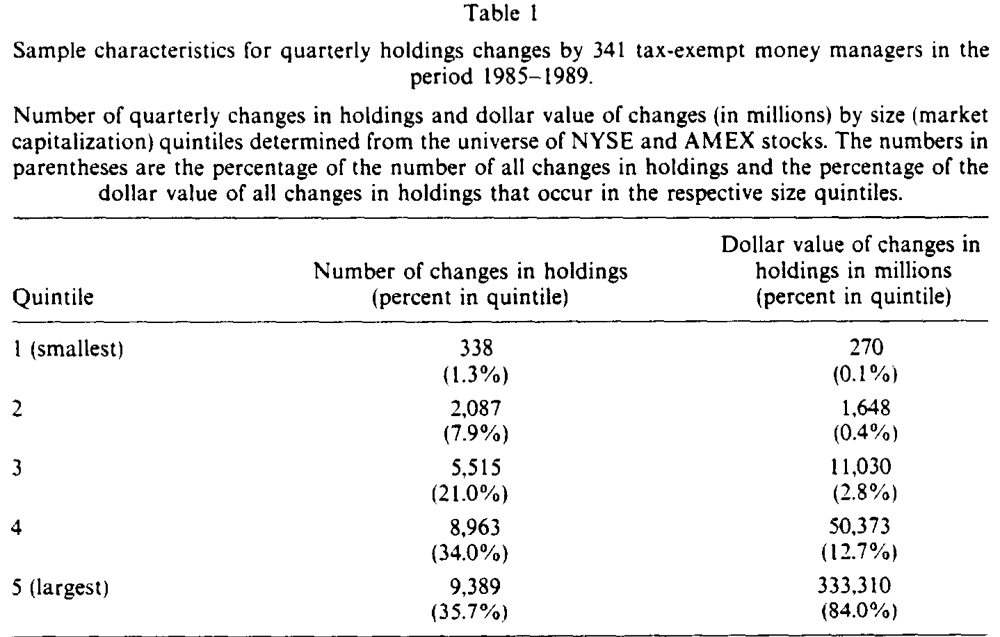
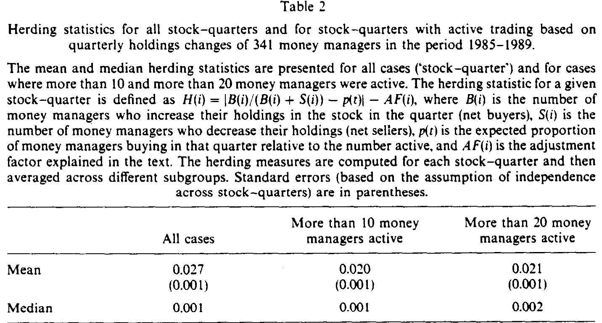
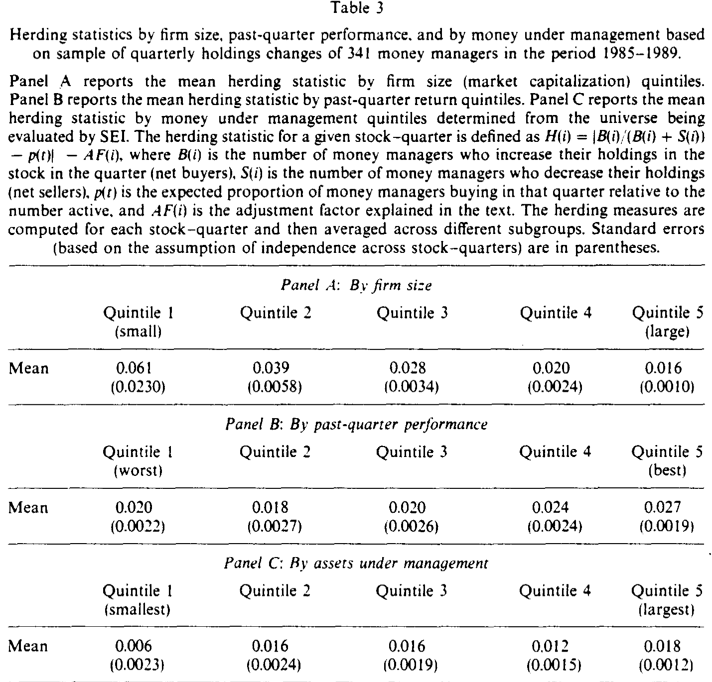
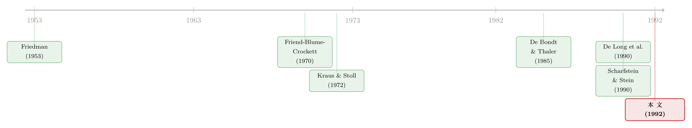

机构投资者真是「蝗虫」吗？——一份养老金账本里的羊群检验
本文读的是 Lakonishok, Shleifer & Vishny (1992, Journal of Financial Economics)：作者拿到 769 只免税基金（绝大多数是养老金）在 1985–1989 年的逐季持仓，去检验机构是不是在「羊群式」地同买同卖、又是不是在「追涨杀跌」。结论出人意料地平淡——养老金经理几乎不羊群（平均羊群统计量只有 0.027，中位数 0.001），也谈不上系统性的正反馈交易。那个「机构搅乱股价」的流行印象，至少在这批最该出问题的样本里，并不成立。
1 引言：一句被反复引用的「蝗虫论」
先讲一个画面。1989 年 10 月，一位养老金经理对《华尔街日报》说了这样一句话：
「机构是群居动物。我们盯着同样的指标，听着同样的预言。像旅鼠一样，我们倾向于在同一时刻朝同一个方向移动。而这，自然会放大价格的波动。」
这句话之所以被反复引用，是因为它精确地说出了一种几乎成为常识的担忧：机构投资者持股占了美国股市的一半，1989 年它们和会员公司的交易更是占了纽交所成交量的 70%（Schwartz and Shapiro, 1992）。这么大的体量，一旦「像旅鼠一样」朝同一个方向冲，股价怎么可能不被推得偏离基本面？
可问题恰恰在这里：这句话是一个断言，而不是一个证据。机构「应该」会羊群，机构「可能」会追涨杀跌——这些都是逻辑上讲得通的故事，但故事讲得通，不等于它真的在数据里发生。本文要做的，就是把这句被无数人点头称是的「蝗虫论」，第一次按在一份真实的持仓账本上，逐季逐股地验一遍。
2 两个嫌疑人：羊群与正反馈
要给「机构搅乱股价」这个指控定罪，作者把它拆成了两条更具体、也更可检验的罪状。
第一条是羊群行为 (herding)：指一批经理在同一只股票、同一个季度里，不约而同地站到了市场的同一边——大家一起买，或者一起卖。这为什么危险？因为单个个人投资者的买卖是分散的、互相抵消的；而如果几个大机构同时去买同一只股票，那对价格的冲击就可能「大得吓人」。
为什么机构「应该」比个人更容易羊群？作者给了三条理由，每一条背后都站着一篇当时的前沿文献：
- 互相打探。机构会从彼此的交易里反推「这投资到底好不好」，于是跟着别人买（Shiller and Pound, 1989；Banerjee, 1992；Bikhchandani, Hirshleifer, and Welch, 1992 的信息瀑布 (informational cascades)）。机构比个人更清楚同行在干什么，所以更容易传染。
- 代理问题。经理之间是相互比较考核的。要避免因为「特立独行」而落后于同行，最省心的办法就是持有和别人一样的股票（Scharfstein and Stein, 1990 的声誉性羊群）。
- 同一个信号。机构都对着同样的分红变化、同样的分析师评级做反应，于是同步行动。
第二条是正反馈交易 (positive-feedback trading)，说白了就是追涨杀跌：买入过去的赢家，卖出过去的输家（De Long et al., 1990；Cutler, Poterba, and Summers, 1990）。从经理的私心看，把赢家加进组合、把输家清出去，还能顺手把「难堪的持仓」从季末报告里抹掉——这就是所谓的「橱窗粉饰 (window dressing)」（Lakonishok et al., 1991）。
但这里有一个常被忽略的逻辑拐点：羊群和追涨杀跌，本身都未必是「搅乱」。如果机构是因为同时读懂了同一则真实的基本面信息而一起买，那它们其实是在加速价格向新基本面收敛，是在让市场更有效；如果股票对消息反应不足，追涨反而把价格推回了它该在的位置。所以「观察到羊群」绝不等于「机构destabilize了股价」。这一层区分，决定了本文该怎么读结果。
3 数据：一批「最该出问题」的样本
接着，一个自然的问题是：要验这两条罪状，你得有一份能看见「谁在买、谁在卖」的账本。本文的底气就来自这里。
数据由金融服务咨询公司 SEI 提供，包含 769 只免税权益基金（按 SEI 定义，权益基金至少 90% 资产配在股票上），它们由 341 位不同的机构货币经理 (money manager) 管理，每位经理名下的基金从 1 只到 17 只不等。样本期是 1985 年第一季度到 1989 年第四季度，记录的是每只基金在每个季末持有每只股票的股数——于是通过相邻两季持仓之差，就能估出每位经理在每只股票上买了多少、卖了多少。
几个量级值得记住：到 1989 年底，这 769 只基金合计管理 $124 billion，约占主动管理的养老金总持仓的 18%；单位经理的平均组合是 $363 million，最大的一位管着 120 亿美元。由于同一位经理名下的不同基金持仓往往高度相似，作者把同一经理的所有基金加总，以经理（而非基金）为分析单位——这是一个看似琐碎、却很关键的处理。
为什么说这是一批「最该出问题」的样本？因为这 341 位经理几乎是清一色的选股型养老金经理，由同一家机构（SEI）用同一套标准考核——他们抢同样的客户、被同一把尺子量。代理性羊群、声誉性羊群、互相打探，所有让机构「抱团」的机制，在这个高度同质的子集里都被放大到了极致。如果连这里都找不到羊群，那「机构羊群」的故事就很难站住。
还有一个事实，是读懂后文的钥匙。如表 1 所示，把每个季度每只股票的持仓变动算作一次观测，全样本共有 26,292 笔变动。但它们极度偏向大盘股：最小规模分位（按市值）只占 1.3% 的变动笔数、0.1% 的变动金额；而最大分位独占 35.7% 的笔数、84% 的金额。粗略说，97% 的交易金额集中在市值最大的那 40% 股票里。换句话说，这批机构基本只在大盘股里折腾。

Table 1
4 关键一步：怎么把「羊群」变成一个数字
但真正关键的一步，是把「羊群」这个含糊的词，做成一个能算、能比较的统计量。这是全文的方法核心。
直觉是这样的：在某个季度里，如果一只股票被 70% 的经理增持、只被 30% 减持，那大家显然站到了同一边；反过来，如果增持和减持各占一半，那就谈不上羊群。所以衡量羊群的关键，是看「净买入经理的占比」偏离「该偏离的基准」有多远。作者据此定义了对某只股票 i、某季度的羊群统计量 H(i)：
这个式子有两处精巧，值得逐一拆开。
第一处是基准 p(t)。 你可能会想，无羊群不就意味着买卖各半、p = 0.5 吗？并非如此。在一个净买入的时期里，本来就该有更多经理在买。本样本里 51.5% 的季度持仓变动是买入，且这个比例逐季波动，所以作者对每个季度单独估一个 p(t)——它等于当季所有股票上买入经理占活跃经理的比例。只有先扣掉这个「大盘层面的同向」，剩下的才是个股层面真正的抱团。
第二处，也是最容易被忽略的，是调整因子 AF(i)。 关键的麻烦在于：即便根本没有羊群——也就是每位经理净买入任一股票的概率都恰好是 p——绝对值 |B/(B+S) - p| 的期望也不会是零。这纯粹是抽样的数学：抛一枚均匀硬币 10 次，正面比例偏离 50% 是常态。由于 B 服从参数为 p 的二项分布，这个「凭空」的期望偏离可以精确算出来，就是 AF(i)。把它减掉，H(i) 才是「超出随机波动的那部分抱团」。而且 AF 随着活跃经理数的增加而下降——经理越多，抽样噪声越小。
把 H(i) 在每个股票-季度上算出来，再在不同子样本里取平均，就得到了全文的主角。
5 主要结果：羊群小到几乎不存在
于是反转出现了——或者说，那个被所有人预期的「搅乱」并没有出现。
如表 2 所示，全样本的平均羊群统计量是 0.027，这是全文最重要的一个数字。它是什么含义？如果某季度 p 恰为 0.5，那么 0.027 意味着：一只「平均股票」上，大约 52.7% 的经理朝一个方向、47.3% 朝相反方向变动持仓。中位数更小，只有 0.001——也就是说，对一只典型的股票而言，羊群几乎为零。即便只看那些有「超过 10 位」或「超过 20 位」经理活跃的股票（这剔除了大量小盘股），均值也不过 0.020 与 0.021，结论纹丝不动。

Table 2
作者补了一句很冷静的话：也许我们本就不该对这个数字之低感到意外。在整个市场上，买的人和卖的人必然一样多，总量层面不可能有羊群——每一股被买，就有一股被卖。羊群只能在某个子集里被检测到。本文分析的恰是这样一个子集（养老金经理），可即便在这个最同质、最该抱团的子集里，也没看到像样的羊群。
还有一个更直观的角度。作者跑了一个横截面回归：被解释变量是「随机抽一位交易该股的经理，他是不是净买入者」（是为 1，否为 0），解释变量是「其余经理中买入者的占比」。斜率是 0.05（t = 13，因为样本巨大，几乎什么都显著）——但真正有意思的是 R^2 只有 0.7%。也就是说，一位经理在某只股票上的行为，能被其他经理的总体行为解释的部分，不到 1%。经理们用着各式各样的交易风格，平均下来，他们的决策几乎是互不相关的。
那羊群会不会藏在某类股票里？ 会有一点。如表 3 的 Panel A，按规模分组后，小盘股的羊群确实更明显，且随市值单调下降：最小分位的羊群统计量是 6.1%，最大分位只有 1.6%。但请回到第 3 节那个事实——97% 的金额都在大盘股里。机构真正下注的地方，恰恰是羊群最弱的地方。而且作者指出，小盘股的羊群还被高估了：如果一家小公司正在增发或回购，那么任何一个投资者样本都会「被动地」显出羊群（因为发行/回购的公司是那个看不见的对手方）。一旦剔除掉那些流通股数变动超过 2% 的股票-季度，小盘股的羊群就明显回落。

Table 3
至于追涨杀跌：平均而言，机构既不正反馈、也不负反馈；小盘股里有一些正反馈的迹象，但在构成机构主要持仓的大盘股里没有。最后，作者把机构的「超额需求」和同期股价变动直接做了相关——结果极弱。这就从正面削弱了「机构超额需求的大幅摆动驱动了个股价格」这一说法。
整篇论文浮现出的图景是：机构投资者在追逐五花八门、彼此抵消的交易风格；尽管它们制造了巨大的成交量，却并没有把股价推离基本面。既不是「稳定者」，也不是「搅局者」，而是第三种、更中性的形象——异质而互相对冲。
作者很诚实地留了一个后门：没有一条准确的需求弹性估计，我们就无法排除「看似很小的羊群或正反馈，配上极度缺乏弹性的需求曲线，也能造成很大价格冲击」的可能。这句话在三十年后会变得格外重要——后来 Koijen-Yogo 一代的「弹性不足之谜」正是顺着这条裂缝长出来的。
6 文献脉络：从「投机会不会稳定市场」到一份持仓账本
把这篇论文放回它的坐标系，故事要从一个更老的争论讲起。
最早的命题来自 Friedman (1953)：理性的投机者会买低卖高，从而稳定价格；亏钱的非理性交易者会被淘汰。这给「投机搅乱市场」泼了一盆冷水。但行为金融的兴起又把水搅浑了——De Bondt and Thaler (1985) 发现市场会过度反应，De Long et al. (1990) 则证明，在理性套利者存在的情况下，正反馈交易非但不会被消灭，反而可能被「理性地」放大，destabilize 市场。

与此同时，「机构会不会抱团」这条线也在各自生长。Friend, Blume, and Crockett (1970) 发现共同基金倾向于买入上一季度被成功基金买入的股票——它们大概在模仿赢家，而这会同时导致羊群和正反馈。Kraus and Stoll (1972) 用 SEC 的机构投资者月度持仓数据，第一次正面检验了「平行交易 (parallel trading)」——也就是羊群——结果只找到很弱的证据，价格与机构超额需求的同期关系也很弱。而 Scharfstein and Stein (1990) 则从理论上给出了机构为何会因声誉而抱团的微观机制。
本文正是这两条线的交汇点：它继承了 Kraus-Stoll 的实证问题，却用了一份质量高得多的逐季持仓数据；它呼应着 De Long 等人的理论担忧，却用直接证据告诉这些担忧——至少在养老金这一块，警报是误响的。它的结论，和后来一系列「机构交易的价格冲击远没有想象中大」的研究遥相呼应（关于机构整体买入对市场的影响只持续一天，可参见《新闻里都说『基金一进场，股市就涨』——可这话只对了一天》；关于把「机构跟风」拆成跟自己和跟别人，可参见《羊群是真的吗？》；关于羊群何时会散场，可参见《跟风不会永远跟下去》）。
7 评论与延伸（Q&A + 研究方向）
(a) 几个可能的疑问
Q：羊群统计量 0.027 到底算大还是算小？会不会是度量本身把信号「洗」掉了？
关键参照系是「无羊群原假设」。
H(i)已经减掉了纯抽样造成的期望偏离AF(i)，所以0.027是超出随机的那部分。它的业务含义很具体：平均股票上约 52.7% vs 47.3% 的分裂。配合那个R^2 = 0.7%的回归——一位经理的行为几乎无法被同行解释——两个独立的角度指向同一结论，被「洗掉」的可能性不大。
Q：作者为什么不在「同风格」的更细子集里找羊群？说不定成长型经理在抱团呢？
作者讨论了这一点，但不为所动。理由有二：其一，样本本就高度同质（全是同一服务考核的选股型养老金经理），已经很难说是随机样本；其二，如果不同风格的子群各自抱团、却又互不相关（成长经理炒成长股、价值经理炒低 P/E 股），那么哪怕在随机样本里，这种抱团也会让整批机构站到市场一边、与个人对盘——而这正是
H能抓到的，但数据里没有。若子群之间是互相对盘（成长买、价值卖给它），那本就不存在destabilize。
Q：羊群和「机构搅乱股价」是一回事吗？
不是。这是全文最重要的概念区分。机构可能因为同时读懂同一则真实基本面而一起买，那是在加速价格收敛、让市场更有效；也可能一起去对冲个人投资者的非理性情绪，那是稳定。观察到羊群，并不足以推出destabilize；本文恰恰连羊群都没怎么观察到。
Q：只用季末持仓，会不会漏掉季内的「来回交易」？
会漏掉季内的整笔往返 (intraquarter round-trip)。但作者认为这类交易并不频繁，对结果影响很小——更何况本文关心的本就是一个季度或更长视野上的价格destabilization，而不是日内的抢帽子。
Q：小盘股 6.1% 的羊群，是不是被「机构搅乱小盘股」坐实了？
要打两个折扣。第一，机构 97% 的金额都在大盘股，小盘股的高羊群对总体价格的含义有限。第二，小盘股的羊群被增发/回购「污染」了——发行方是看不见的对手方，会在任何样本里制造伪羊群；剔除流通股变动超 2% 的样本后，小盘股羊群明显回落。
Q：这篇 1992 年的结论，今天还成立吗？
要谨慎。本文样本是 1985–1989 的养老金，那个年代被动指数化、ETF、量化对冲基金都还很小。当持仓越来越集中在追踪同一指数、用同一类信号的机构手里时，羊群与共同冲击的图景可能完全不同。本文真正稳健的，是它的方法和那句关于需求弹性的警告，而非那个具体的
0.027。
(b) 几个可能的研究问题与提案
1. 把 LSV 羊群度量搬到公司债市场。
【经济故事】公司债远比股票缺乏流动性，做市商库存有限，机构（保险公司、债券基金）的同向交易更可能造成真实的价格冲击与「火线甩卖」。羊群在这里的destabilizing含义，理论上应当比股票强得多。
【可行性】中。TRACE 提供逐笔成交，eMAXX/Lipper 提供季度机构持仓，可在 CUSIP-季度上重构 H(i)，并用同发行人不同券的价格差来分离流动性冲击与基本面。难点是债券持仓数据的覆盖度与对手方识别。
2. 外资持有人是不是一种「更整齐」的羊群？ 【经济故事】外国机构信息更同质、对同一则全球宏观/评级信号反应更一致，理论上比本地机构更容易抱团；而新兴市场流动性薄，同向资本流动的价格冲击会被放大。这正好接上「外资是不是蝗虫」的争论。 【可行性】高。EPFR 的国别基金流、各国托管数据可在「国家×行业×月」上算羊群，再用 MSCI「可投资度」调整作为外资敞口的外生变化做识别。
3. 当持仓集中到被动指数基金，羊群度量会怎样系统性失真？
【经济故事】指数基金在再平衡日被动地同买同卖，会在 H 里显出「机械羊群」——这既非信息、也非情绪，却会污染对主动羊群的估计。如何从 H 里剥离「指数事件」造成的同向，是一个干净的方法问题。
【可行性】高。用指数成分调整日与再平衡公告作为外生冲击，构造「剔除指数事件」的 H，对比主动与被动持仓。数据（13F、ETF 申赎、指数变更）都公开。
4. 把「需求弹性」这块缺失的拼图补上。 【经济故事】本文最大的留白，就是承认「小羊群 + 缺弹性需求 = 大冲击」无法排除。后来一代「弹性不足」文献（机构需求曲线极陡）恰好提供了那块弹性估计。把 LSV 的羊群量级乘上一个可信的需求弹性，才能真正回答「这点羊群到底搬动了多少价格」。 【可行性】中。需要把羊群度量与基于工具变量（如指数纳入、同门基金流）的需求弹性估计拼接，识别上要小心循环论证。
8 我的判断
这篇论文的贡献，不在于它「发现」了什么惊人的现象，而恰恰在于它没有发现——并且用一个干净、可复制、概念清晰的度量，把「没发现」这件事讲得让人信服。它把一句人人点头的常识（机构是搅乱市场的蝗虫）拉到数据面前，得到了一个反直觉、却很扎实的「无结果」。在一个充斥着「显著为正」的文献里，一个诚实的、被认真对待的零结果，本身就是稀缺品。它的羊群度量 H(i) 此后成了整条文献的标准工具——这是方法论上的长寿。
对识别，我有两点保留。其一，季末快照天然看不见季内的同步进出，而真正的「旅鼠时刻」很可能恰恰发生在一个季度之内、在某个新闻冲击之后的几天里——本文的频率正好滤掉了它最该捕捉的现象。其二，也是作者自己点破的，没有需求弹性，量级就无法翻译成价格含义：在一条极陡的需求曲线上，0.027 的羊群未必「小」。
后续我最想看到的，是把这套度量搬到流动性更薄、对手方更可识别的市场（公司债、新兴市场外资）里去，并真正把「羊群量级 × 需求弹性」乘出来——只有那样，我们才能从「机构有没有抱团」这个事实问题，走到「抱团到底搬动了多少价格」这个福利问题。在我看来，那才是这篇 1992 年的论文留给今天的、最值得接续的一根线头。
参考文献
- Banerjee, A. (1992). A simple model of herd behavior. Quarterly Journal of Economics, forthcoming.
- Bikhchandani, S., Hirshleifer, D., & Welch, I. (1992). A theory of fads, fashion, custom, and cultural change as informational cascades. Journal of Political Economy, forthcoming.
- Cutler, D., Poterba, J. M., & Summers, L. H. (1990). Speculative dynamics and the role of feedback traders. American Economic Review, Papers and Proceedings 80, 63–68.
- De Bondt, W., & Thaler, R. (1985). Does the stock market overreact? Journal of Finance 40, 793–809.
- De Long, J. B., Shleifer, A., Summers, L. H., & Waldmann, R. J. (1990). Positive feedback investment strategies and destabilizing rational speculation. Journal of Finance 45, 379–395.
- Friedman, M. (1953). The case for floating exchange rates. In Essays in Positive Economics. University of Chicago Press.
- Friend, I., Blume, M., & Crockett, J. (1970). Mutual Funds and Other Institutional Investors. McGraw-Hill.
- Kraus, A., & Stoll, H. R. (1972). Parallel trading by institutional investors. Journal of Financial and Quantitative Analysis 7, 2107–2138.
- Lakonishok, J., Shleifer, A., Thaler, R., & Vishny, R. W. (1991). Window dressing by pension fund managers. American Economic Review, Papers and Proceedings 81, 227–231.
- Lakonishok, J., Shleifer, A., & Vishny, R. W. (1992). The impact of institutional trading on stock prices. Journal of Financial Economics 32(1), 23–43.
- Scharfstein, D. S., & Stein, J. C. (1990). Herd behavior and investment. American Economic Review 80, 465–479.
- Schwartz, R., & Shapiro, J. (1992). The challenge of institutionalization for the equity market. Working paper, New York University.
- Shiller, R. J., & Pound, J. (1989). Survey evidence on diffusion of interest and information among investors. Journal of Economic Behavior and Organization 12, 47–66.